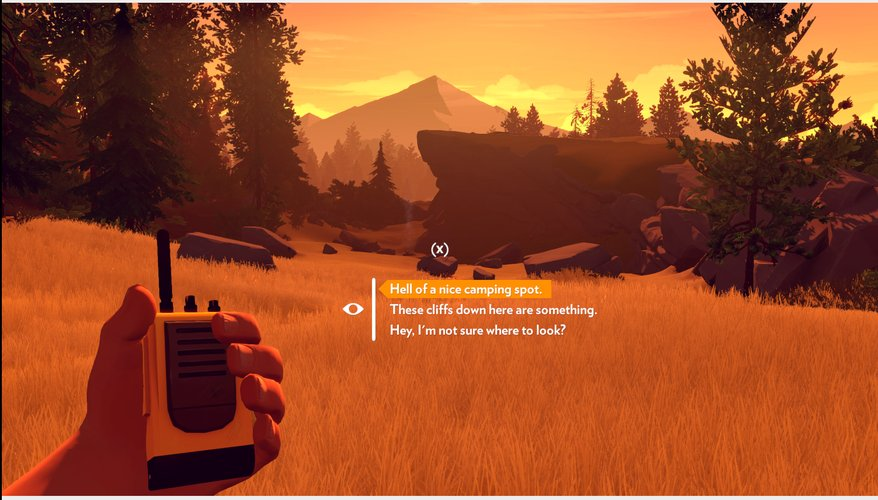

Firewatch is a game where you play as the character, Henry, who is working at a firewatch post for the first time after deciding he needed to pivot in life. While you play the game you get to experience what it's like to be all alone in the forest while you communicate with someone, via walkie talkie, working in another firewatch post. As you go through the weeks you start to realize you may not be as alone as you thought you were...
I played this game over the Summer last year for the first time because I was bored and it was free with my Xbox Game Pass. I was immediatly hooked into the game becase of the way the game was able to make me feel immersed in the enviornment. The game is designed in a way that has you make desicions on what to say and do in the game which help add to the immersion. Heres an image of what that could look like.
In this game you complete tasks every day by walking around park site and tending to what needs attention. Eventually you come across some mysterious things. As you gather more information you start to question whats going on, and what there is that you dont know about. Once you start question things you eventually get knocked out by someone and wake up hours later. Thats when you realize you need to start digging deeper. As you uncover more information, the person that is in charge of al the things you've been uncovering tries harder and harder to scare you away.
I wont spoil too much but after the main character, Henery, finally unfolds the mystery that awaited him, a wildfire brakes out nearby and he has to get to the closest firewatch post that wasnt the one he was staying at, to catch a helicopter evacuation. The next closest one ends up being the post of the person that you spend the whole game talking too on the walkie talkie. The actions that you chose to do and say throughout the game while chatting with them effects what ending you get.